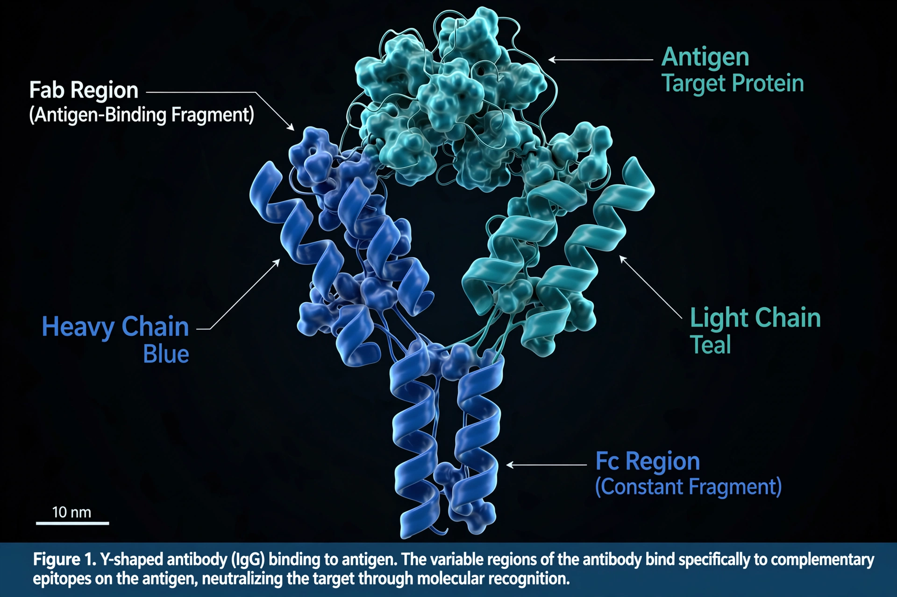

From Wikipedia, the free encyclopedia
| Antibody (immunoglobulin) | |
|---|---|
 | |
| Produced by | Plasma cells (derived from B lymphocytes) |
| Classes | IgG, IgA, IgM, IgE, IgD |
| Function | Neutralisation, opsonisation, complement activation |
An antibody (Ab), also known as an immunoglobulin (Ig), is a large, Y-shaped protein used by the immune system to identify and neutralise foreign objects such as pathogenic bacteria and viruses. The antibody recognises a unique molecule of the pathogen, called an antigen. Each tip of the "Y" contains a paratope specific for one particular epitope on an antigen, allowing these two structures to bind together with precision.
Antibodies are composed of two identical heavy chains and two identical light chains, held together by disulfide bonds. The tips form variable regions that bind antigen; the stem (Fc region) determines the antibody's class and its interactions with other immune components. There are five classes in mammals: IgA, IgD, IgE, IgG, and IgM.
Antibodies contribute to immunity by neutralising pathogens directly, coating them for phagocytosis (opsonisation), activating the complement system, and triggering degranulation of mast cells and other effector responses. They are produced by plasma cells after activation of B cells, and the enormous diversity of the antibody repertoire arises from V(D)J recombination of immunoglobulin gene segments.
Antibodies are central to diagnostics (ELISA, lateral-flow tests), serology, and vaccination monitoring. Engineered monoclonal antibodies are major therapeutics in cancer (e.g. rituximab, trastuzumab), autoimmune disease, and infectious disease. Polyclonal antibody preparations are used as antivenoms and for passive immunisation.
Categories: Antibodies | Immune system | Glycoproteins